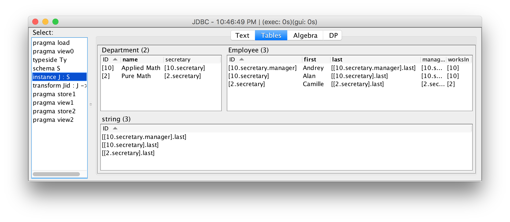

Categorical Databases
Home |
Download |
Getting Started |
Manual |
Wiki |
Papers |
Screen Shots |
Github |
Google Group |
Conexus |
Contact
JDBC Import/Export
In practice, a data integration task requires importing and exporing data from many CSV files, SQL databases, etc., and CQL provides seamless import/export capabilities for CSV and for SQL via JDBC.
This example (built in to the IDE with name JDBC) defines a source schema about employees, and populates an instance on this schema by querying a database using JDBC. To be self-contained, the example creates a sample in-memory SQL database to import from, but any SQL database accessible over JDBC can be used.
We start by defining a source SQL schema for employees and populating it with sample data. We must provide the name of a JDBC driver (in this case, H2), along with a JDBC connection string indicating which database to connect to (in this case, db1). We then issue a series of SQL commands to create the sample input database. In practice, the initial sample data creation phase will be skipped because we will import real data.
pragma load = exec_jdbc "org.h2.Driver" "jdbc:h2:mem:db1" {
"CREATE TABLE Employee(
id INT PRIMARY KEY,
name VARCHAR(255),
manager INT,
worksIn INT
)"
"CREATE TABLE Department(
id INT PRIMARY KEY,
name VARCHAR(255),
secretary INT,
)"
"INSERT INTO Employee VALUES
(101, 'Alan', 103, 10),
(102, 'Camille', 102, 2),
(103, 'Andrey', 103, 10)"
"INSERT INTO Department VALUES
(10, 'Applied Math', 101),
(2, 'Pure Math', 102)"
}
We import onto the following schema about employees and departments:
typeside Ty = literal {
java_types
String = "java.lang.String"
java_constants
String = "return input[0]"
}
schema S = literal : Ty {
entities
Employee
Department
foreign_keys
manager : Employee -> Employee
worksIn : Employee -> Department
secretary : Department -> Employee
attributes
first last : Employee -> String
name : Department -> String
}
To specify the import, we give a one-column SQL query for each entity (which defines the set of IDs for that entity), and a two column SQL query for each attribute and entity (which defines the function associated with each foreign key and attribute):
instance J = import_jdbc "org.h2.Driver" "jdbc:h2:mem:db1" : S {
Employee -> "SELECT id FROM Employee"
Department -> "SELECT id FROM Department"
manager -> "SELECT id, manager FROM Employee"
worksIn -> "SELECT id, worksIn FROM Employee"
secretary -> "SELECT id, secretary FROM Department"
first -> "SELECT id, name FROM Employee" //use name as first name
last -> "SELECT id, NULL FROM Employee" //use null as last name
name -> "SELECT id, name FROM Department"
}
The result is displayed in the IDE:
To export an instance to a SQL database over JDBC, we simply give a prefix, in this case Exported, and the tables are exported, in this case as ExportedEmployee and ExportedDepartment:
pragma store = export_jdbc_instance J "org.h2.Driver" "jdbc:h2:mem:db1" "Exported"
The exported data can be viewed in SQL, for example:
SELECT * FROM ExportedEmployee; ID id1, LAST null, FIRST Camille, MANAGER id1, WORKSIN id0 ID id3, LAST null, FIRST Alan, MANAGER id4, WORKSIN id2 ID id4, LAST null, FIRST Andrey, MANAGER id4, WORKSIN id2 SELECT * FROM ExportedDepartment; ID id0, NAME Pure Math, SECRETARY id1 ID id2, NAME Applied Math, SECRETARY id3